ホーム → 補論 → 文法 → 日本人のための日本語 → 日本人のため：4
いよいよこの章から、本格的な文法用語が登場します。その一つがボイスです。ボイスは英語をカタカナにした用語で、“Voice”と書きますので、「声」と同じつづりになります。辞書には「声」の他に、文法用語で「態」という訳が出ています。では、「態」というのはどういうものでしょうか。中学校や高校の英語で勉強した能動態、受動態と言ったら、覚えているでしょうか。これは英語の受身形の説明に出てくるものです。読者の皆さんはずいぶん昔に学校を卒業した方も多いかと思いますので、忘れているかもしれませんが、とにかく、ボイスは、受身と関係のある文法用語なんですね。
ボイスを簡単に説明すると、文の成分のなかで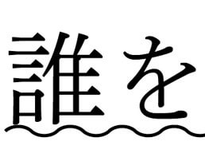 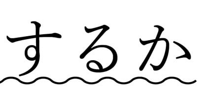によって、助詞や動詞が変化する現象のことを言うんです。言葉だけではわかりにくいので、具体的な例文で説明しますね。たとえば、次の文を見てください。
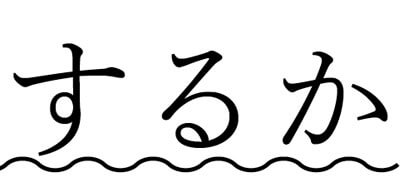によって、助詞や動詞が変化する現象のことを言うんです。言葉だけではわかりにくいので、具体的な例文で説明しますね。たとえば、次の文を見てください。
小泉元首相とブッシュ元大統領の仲の良さは有名でしたので、こんなことはきっとなかったとは思いますが、もし起きていれば大ニュースとなって世界中を駆け巡ったはずです。その場合、ブッシュさんのほうが有名ですので、ブッシュさんを主役にして、
となっていたことでしょう。この場合、１）の文も２）の文も同じ事実を表していますが、誰を主役（主語）にするかによって、異なる形式になっているんですね。
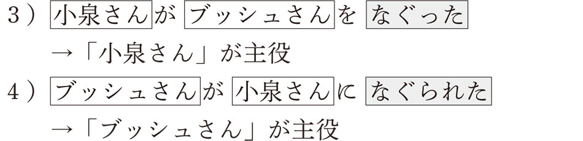４）では、「ブッシュさん」はヲ格からガ格に、「小泉さん」はガ格からニ格に、「なぐった」という動詞は「なぐられた」に変わっています。このような変化の対応をボイスと言います。３）のような文を能動文、４）のような文を受動文（受身文）と呼ぶんですね。第３章で見た自動詞と他動詞の対応もボイスの一つと考えることができます。たとえば、
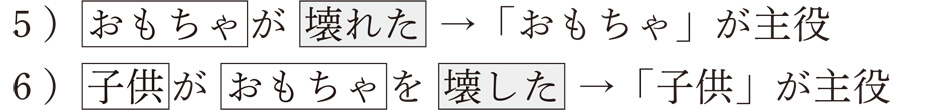という具合です。５）も６）も話者は同じ事実を見ているんですが、「変化」を中心に表すと「おもちゃ」が主役になるし、「動作」を中心に描くと、「子供」が主役になるんですね。ボイスではもう一つ重要な形式があります。それは、使役形です。
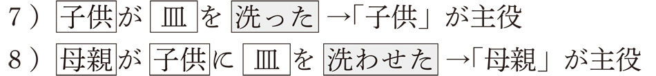子供の動作を中心に表せば７）になるし、その動作を命じた母親の視点から表せば８）になるんですね。７）では子供が主役ですし、８）では母親が主役となっていると考えることができるでしょう。
このように、ボイスとは、主役を誰にするかによって異なる形式になる文法現象のことを言うわけです。
ボイスの代表例は受動文です。受動文では、主語と目的語が入れ替わります。通常、ある動作を働きかける人は主語（ガ格）として表され、主役となります。このような文を能動文と言います。しかし、働きかけを受ける人（通常は目的語）を主役にすることもできます。これが、受動文ですが、その際、働きかけを受ける人（目的語）を主語にするために、助詞や動詞を変化させる必要が出てきます。
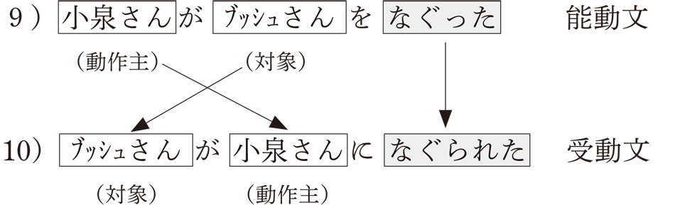働きかける人を文法用語で動作主、働きかけを受ける人や物のことを対象と呼びます。そうすると、能動文では動作主はガ格、対象はヲ格で表されますが、受動文では対象がガ格、動作主はニ格になるわけです。このような受動文は多くの言語に共通して見られる現象で、もちろん、英語でも同様に表すことができます。
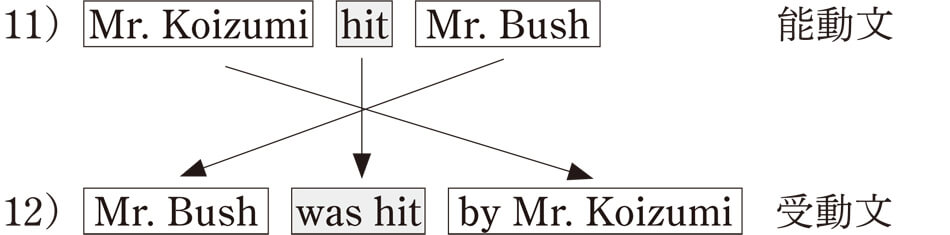英語では、一番はじめに来るのが主語となりますので、“Mr. Bush”を前に出すと、動作主であった“Mr.Koizumi”は動詞の後に来て、by という前置詞がつきます。動詞も、“hit”から“was hit”に変化します。このことから、能動文は必ず他動詞文であり、その目的語を主語にすることで受動文が成立することになります。
日本語では、このような受動文のことを直接受身文と呼んでいます。受身文は受身文だけでよさそうなものなのに、なぜ直接をつける必要があるのでしょうか。それは、日本語にはその他にも受身文が存在するからなんです。これが、他の言語と大きく異なるところです。つまり、他言語にはない受身文が日本語には存在するということです。このことは、日本語を外国人に教えているような人でなければ、ほとんどの人は知らないのではないでしょうか。この、他言語にはない受身文がまさに日本人の考え方を表しているんですね。では、これから、この日本人の心の内面を代弁する受身の表現について説明していくことにします。
この特別な受身文は、間接受身文と呼ばれます。直接受身文に対して、どうして間接かということですが、直接受身文では文を構成するパーツは同じでした。このパーツを組み替えることで受身文を作ったんですね。もう一度、小泉さんとブッシュさんの例を見てみましょう。
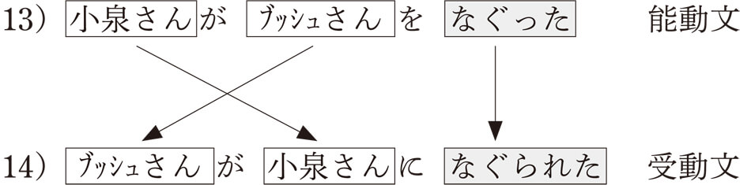パーツとしては、「小泉さん」と「ブッシュさん」と「なぐった」でしたね。これを入れ替え、助詞と動詞を修正することで、受身文はできあがりました。具体的には、「ブッシュさん」はヲ格からガ格へ、「小泉さん」はガ格からニ格へ、「なぐった」は「なぐられた」という受身形に変わったわけです。したがって、ブッシュさんは小泉さんから直接影響を受けているという意味で、直接受身文と呼ばれるわけなんです。
ということは、間接受身文では直接的ではなく、間接的に影響を受けるということになるんですね。これは、どういうことを意味するのでしょうか。つまり、小泉さんがブッシュさんをなぐったことで、間接的に影響を受けるような人がいるのでしょうか。それが、いるんですね。たぶんブッシュさんがなぐられて一番嫌な思いをするのは奥さんでしょう。ブッシュさんの奥さんはローラさんと言って、控え目なファーストレディとしてアメリカ国民から絶大な人気がありました。このローラさんを主役に受身文を作るんですよ。たとえば、「ローラさんは小泉さんにブッシュさんをなぐられて、悲しかった」という文はいかがでしょうか。言えそうでしょう。実際は、ローラさんにとって、ブッシュさんは夫ですので、「ローラさんは小泉さんに夫をなぐられた」のほうがより自然な感じがしますね。先ほどの直接受身文と大きく違うのは、今度の主役は能動文のなかには存在しなかった人です。ですから、パーツを組み替えるのではなく、新しいパーツ（主役）を持ってきたわけです。図式にするとわかりやすいので、ご覧になってください。
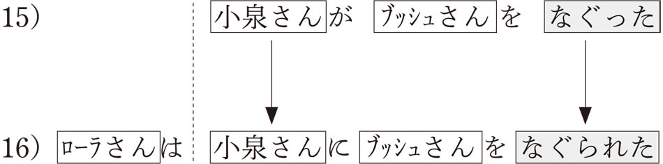直接受身文とくらべると、随分違うでしょう。パーツを組み替えるというより、新しいパーツを足して作っているという感じでしょうか。
じつは、この間接受身文の発想は直接受身文とはまったく異なるんです。直接受身文は文字通り、主役を誰にするかという選択によって、できたものでした。ところが、この間接受身文はそのような主役が入れ替わるという発想ではないんですね。では、どんな発想かと言うと、その出来事全体によって影響を受ける人を主役にするという発想です。
もう少しわかりやすく説明しますね。この文の意味するところは、「ブッシュ夫人であるローラさんは、『小泉さんがブッシュさんをなぐった』という出来事によって影響を受けた」という文なんです。つまり、ある出来事が起きることで、間接的に影響を受ける人を主役にするのが間接受身文なんです。直接受身文では主役の入れ替えが必要でしたので、必ず目的語がなければ作れませんでした。動作主が主役なのか、対象が主役なのかという選択ですね。ところが、間接受身文では、出来事がそのまま受け入れられますので、目的語のあるなしはまったく関係がないんですね。ということは、自動詞の出来事でも受身文が可能になるわけです。これが、英語などの他言語と非常に異なるところです。たとえば、仕事帰りに突然雨が降ってきて困ったりすることがありますね。このような場合、「雨が降った」という自然現象によって受けた影響を、「仕事帰りに突然雨に降られて、困ったよ」などと言うことができるんですね。
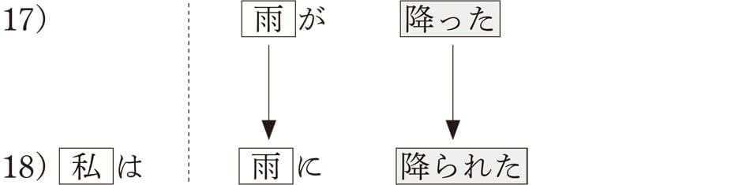このような発想は英語などの欧米語にはまったく考えられないものです。自分がどうする、または相手にどうされるという人間中心の発想ではなく、身の周りに起きたことで私たちはさまざまな影響を受けているという考え方ですね。そこには、人間に関わる出来事も大きな自然の流れのなかで受け止め、起きたものはしかたがないと淡々と受け入れるいさぎよさが感じられます。東日本大震災による津波の被害も日本人にとっては受け入れざるをえない、大きな自然のうねりのように感じられるのではないでしょうか。そのような気持ちが「私は津波に家を流された」という表現になるわけです。
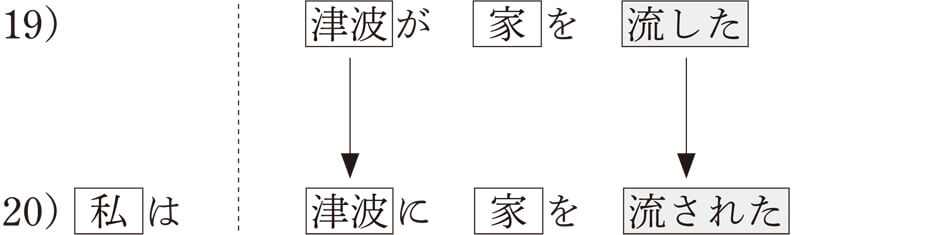もちろん、ここには目的語があるので、目的語を主語にした直接受身文も可能です。その場合、「私の家が津波によって流された」という表現になるのですが、自分の家が津波という災害によって壊されたという事実描写的な表現と言えます。しかし、日本人なら、「津波に家を流された」という表現のほうが自然ではないでしょうか。そこには、大自然の猛威を受け入れざるをえないという気持ちが込められているからです。したがって、自然現象であれ、出来事であれ、それを受け止め、それをどのように感じたのかを表すのが間接受身文になるわけです。その他の例を挙げますので、直接受身文との違いを確認してみてください。なお、自然な日本語にするために、間接受身文の主語である「私は」は省略してあります。
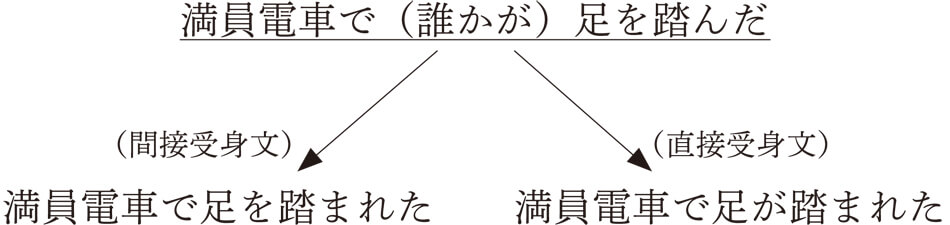 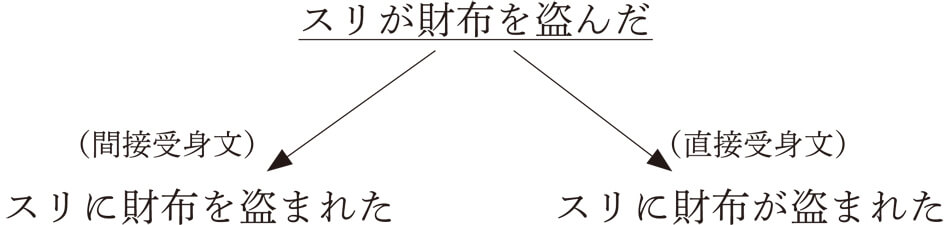皆さんなら、どちらの受身文を使いますか。日本人なら、間接受身文を使うことのほうが多いのではないでしょうか。このような発想は他言語にはないため、日本語を勉強する外国人はほとんどと言っていいほど、直接受身文で表すんです。間接受身文が使えるようになるためには、このような日本人の発想を身につける必要があるんですね。日本語が上手になるというのは、このような日本人のメンタリティも同時に理解することが必要になるのです。したがって、日本語を学ぶ＝日本人の心（文化）を学ぶことになるんです。
ところで、先に紹介した三上章さんは、直接受身文を「まともな受身」と呼び、間接受身文のことを「はた迷惑の受身」と呼びました。ユーモアに富んだ三上さんらしいネーミングですね。これは、間接受身文が使われる状況は、迷惑であることが多いからです。今まで見てきた間接受身文を考えてみても、「夫をなぐられた」「雨に降られた」「家を流された」「足を踏まれた」「財布を盗まれた」など、すべて迷惑な気持ちを表しています。ただ、すべてが迷惑というわけではないので、気をつける必要がありますよ。たとえば、次の例では迷惑の意味はありません。

この文では風が吹くという自然現象に二人が身を任せている状況が目に浮かぶようですね。英語ではなかなかうまく表現できない状況です。
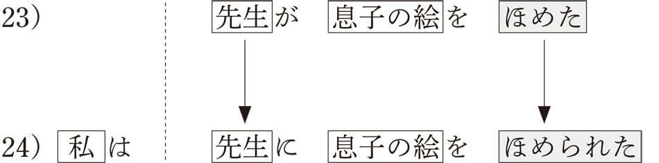子供の絵がほめられ、ちょっと恥ずかしいような嬉しい気持ちがよく表れています。これを、「息子の絵が先生にほめられた」と直接受身文で表すと、ただ事実をそのまま伝えているようで、日本人の謙虚な気持ちが感じられない表現になってしまいます。
間接受身文が出来事を受け入れ、その出来事からの影響を述べる文であるとしたら、使役文は出来事への関与を表します。この関与の仕方には、積極的関与と消極的関与の２種類があります。積極的関与では、その出来事を自分の意志で起こすということになり、強制的な意味合いが出てきます。
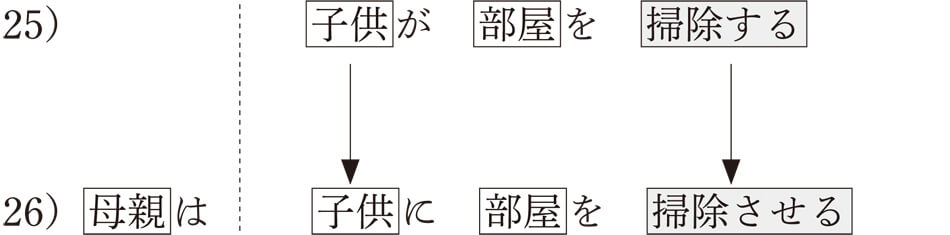「子供が部屋を掃除する」という出来事に「母親」が積極的に関与し、そのような状況を引き起こすと考えるんですね。これに対し、消極的関与では、出来事の実現に積極的に関与するわけではありませんが、その出来事を容認して実現させるということになります。
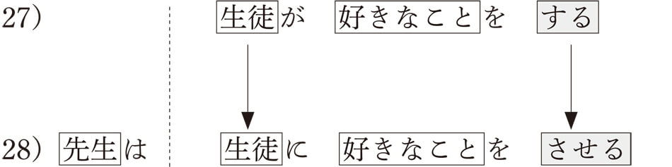生徒が好きなことをするのを、先生は容認しているわけです。もちろん、強制という意味でも使えますが、ここでは「生徒が好きなことをしたいと言ったので、させることにした」などという状況を表しています。
このように使役形は他者への働きかけという意味では他動詞のような働きがあるのですが、他動詞とは根本的な違いがあります。それは、他動詞は具体的な人や物（対象）に対して働きかけるわけですね。たとえば、「子供がおもちゃを壊す」では、子供が「おもちゃ」という対象に働きかけ、それが壊れるという結果を生むわけです。これに対し、使役形は出来事に対して働きかけをおこなうという点です。つまり、前掲の例文26）であれば、「子供が部屋を掃除する」という実現に向け、積極的に関与したということであり、例文28）であれば、「生徒が好きなことをする」ことを容認するかたちで実現させたということになるのです。このように、使役形は、受身形と同様に、身の周りに起こる出来事に対し、話者自身がどのように関与したのかを表す言語形式であると言えるのですね。その意味では、大きな自然な流れのなかで起きる出来事に対して、受け入れる場合は受身形を、自らが関与する場合は使役形が使われると言えそうです。いずれにせよ、自然と共存しながら、自己のあり方を表現しようとする日本人の人生観が表れていると言えるのではないでしょうか。
日本語のボイスの表現では、受身形と使役形が代表的な形式でしたが、もう一つ重要な形式があります。それが、「やりもらい動詞」です。文字通りやったりもらったりすることを表す動詞なのですが、具体的には「あげる」「くれる」「もらう」という３つの動詞の表現になります。「やる」は「あげる」と同じ意味ですので、ここでは「あげる」のなかに含めて扱うことにします。この「やりもらい動詞」にもまた、日本人の心が反映されています。まずは、３つの動詞による基本的な表現を見てみましょう。
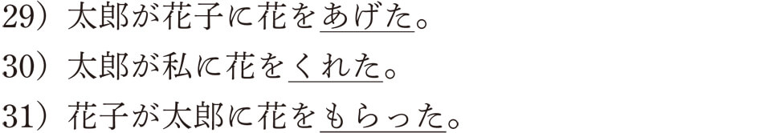「やりもらい動詞」の使い方には複雑な要素がありますが、ここではシンプルに考えてみることにしましょう。この３つの動詞は英語で言うと、“give”か“receive”のどちらかになります。「あげる」は“give”で、「もらう」は“receive”ですが、では、「くれる」はどちらになるでしょうか。ちょっと考えると、花をもらうのは自分ですので、“receive”と考えがちですが、じつは“give”なんです。上の例文を英語に直すと、わかりやすいので見てください。
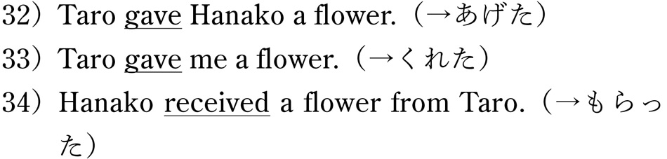英語の“give”にあたる動詞が、日本語では「あげる」と「くれる」の２つあるということになるわけです。他言語では英語のような二項対立が普通ですので、三項対立の日本語はかなり珍しいと言えます。この「あげる」と「くれる」は補完関係にあり、“give me”となるときのみ「くれる」が使われ、それ以外は「あげる」が使われます。どうして、このやりもらい動詞がボイスの表現かと言うと、対応する動詞で主役を交替させるからです。
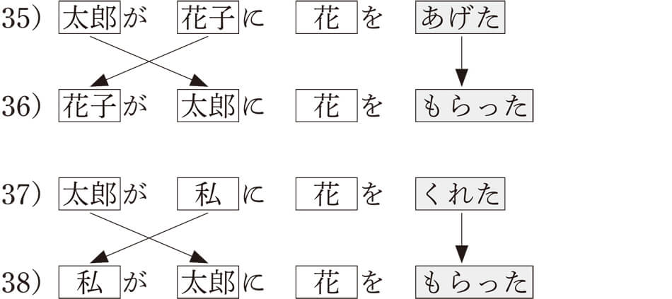受身文と使役文との違いは、助詞の交替とともに動詞が変化するのではなく、動詞自体がまるごと替わってしまうということなんですね。対応する動詞を使って、主役を交代させることから、ボイスの表現に分類されるわけです。
ところで、「くれる」の動作が向かう相手である「私」はウチと呼ばれるグループに含まれ、「私」だけではなく、「私」の身内や関係者であれば「くれる」が使われます。たとえば、自分の弟であれば、
と言えるでしょう。ところが、自分とは関係のない第三者に対しては「くれる」を使うことはできません。
40）の例文が成り立つためには、「五郎」が自分の身内や関係者でなければなりません。そうでなければ非文法的になるわけです。このような、自分を中心に考える人とそうではない人のグループのことをウチ、ソトと呼び、この区別が「あげる」と「くれる」の使い分けに深く関わっているんですね。自分の関係者とそうではない他の人とを区別する発想は、いろいろな日本人論のなかでも扱われることが多いので、読者の方のなかにも聞いたことのある人が多いはずです。ところが、この「ウチとソト」の関係以外にも、日本人の心を表す重要な役割がこの「やりもらい動詞」にはあるんです。ここからは、おそらくどんな日本人論でも扱われていない日本人の思いやりを表す「やりもらい動詞」についての説明になります。
これまでに見てきた「やりもらい動詞」は物の授受を表す表現として、他言語にも見られる一般的な使い方でした。このような「やりもらい動詞」は、例文29）～31）のように、動詞本来の意味で使われることから、本動詞と呼ばれます。ところが、この「やりもらい動詞」は補助動詞として使われることのほうが断然多いのです。補助動詞と言っても、よくわかりませんよね。たとえば、次のような例文が「やりもらい動詞」が補助動詞として使われている例です。
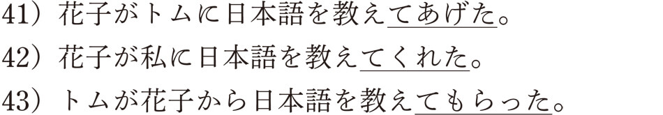ここでは、「教える」という動詞について「教えてあげる」「教えてくれる」「教えてもらう」という形式になっています。「～てあげる」「～てくれる」「～てもらう」と考えるといいでしょう。それで、この表現をどのように考えるかということなんです。つまり、この補助動詞としての表現は必要でしょうか。だって、意味だけを考えれば、なくてもいいでしょう。なければ、次のような表現になりますよ。
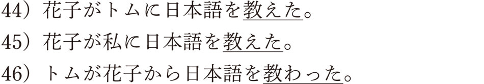こちらの表現のほうがすっきりしているとは思いませんか。ただ、淡々としすぎていてなんかしっくりこない感じもしますね。そうですね、私たち日本人は会話に「やりもらい動詞」が補助動詞として入っていないと、何か物足りなく感じることが多いんです。どうしてでしょうか？ じつは、この補助動詞としての「やりもらい動詞」には、日本人の思いやりの気持ちが込められているからなんです。そのことをこれから説明していきますね。
まず、例文41）から考えましょう。この文の事実は、「花子がトムに日本語を教えた」ということですね。それで、どうして、「～てあげる」が使われているかということですが、日本語ではこの事実を、「花子が『日本語を教える』という思いやりをトムにあげた」と考えるわけです。これをわかりやすく示すとこんな感じです。
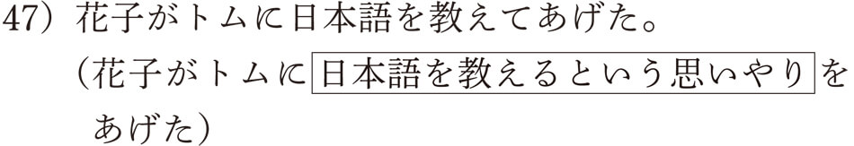その他の表現も、考え方は同じですよ。
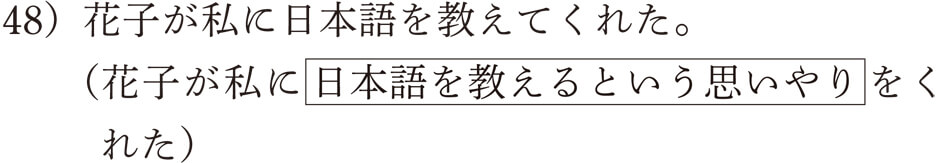
なんでこんなまどろっこしい表現をするんでしょうか。じつは、これこそが、私たちの日本人たるゆえんなんですね。小さな島国でほぼ同じ民族しか住んでいない日本では「和を尊重する」ことがとても重要なんですね。そこでは助け合いの気持ちが必要なんです。他人との交流は、必然的に思いやりのやりとりとしてとらえられるようになったわけです。日本人の人間関係では「相手にしてあげる」「相手がしてくれる」「相手からしてもらう」という、相手をいたわり、感謝する気持ちが重要になるんですね。あの聖徳太子でさえ、憲法十七条の第一条の冒頭に、「和をもって貴しとなし」と書いているではありませんか。今から歴史をさかのぼること約1400年、604年のことです。昔から脈々と受け継がれてきた日本人の心がこの「やりもらい動詞」の表現に込められているんです。
本書では「思いやり」という言葉を使っていますが、文法書によっては、「恩恵のやりもらい」や「好意のやりもらい」などと言うこともあります。でも、「思いやり」と言うほうが日本人の心を表していて、私にはぴったりだと思えるんですが、いかがでしょうか。
この思いやりの表現は、他人と関わる行為のほとんどに使われています。ちょっと考えてみてください。こんな言い方が普通でしょう。「悪いけど、ちょっと駅まで送ってってくれない？」「お兄ちゃんが算数を教えてあげるね」「すみません、ちょっと道を教えていただけませんか」（「いただく」は「もらう」の謙譲語）「先生がわざわざ教えてくださったよ」（「くださる」は「くれる」の尊敬語）「ねえ、明日一緒に買い物に行ってくれない？」「いいよ、行ってあげるよ」。いかに私たち日本人が何気なくこのような表現を多用しているか、おわかりになったでしょうか。
この思いやりの表現を持たない外国人が「やりもらい動詞」を使いこなすのは非常に難しいことです。外国人は、「私はあなたに英語を教えます。あなたは私に日本語を教えます。だから、グッドですね」などと言いますが、日本人なら、「私はあなたに日本語を教えてあげます。あなたは私に英語を教えてくれます。だから、グッドですね」と言うでしょう。
ちょうどこの原稿を書いているときに、大相撲の把瑠都関（エストニア出身）が初優勝を飾りました。常日頃からインタビューに流暢な日本語で答える把瑠都関を見ていて、日本語が上手だなあと感心していました。しかし、優勝インタビューを聞いたとき、やはりまだ日本人のメンタリティは完全には身についていないんだなあと思わざるをえませんでした。土俵下でのインタビューで母親が来ていることについて聞かれた把瑠都関は、「お母さんがいなかったら、私はここにいないから」と言ったあと、涙を流しながら、「私を生んで、ありがとう」と叫んだんです。もうおわかりですよね、日本人なら何て言うか。日本人なら、「私を生んでくれて、ありがとう」と言っているでしょう。もちろん、把瑠都関に思いやりの気持ちがないと言っているわけではありません。お母さんを思いやる気持ちは普通の日本人以上にあるにちがいありません。ただ、日本語にはそのような相手を思いやる表現が言語形式として確立しているんですね。把瑠都関にはこの思いやりを表す表現がまだしっかりと身についていなかったと言えるわけです。
私は日本語学が専門で、長い間留学生に日本語を教えていますが、「やりもらい動詞」が上手に使えるようになるまでには、本当に長い時間がかかります。そのためには、日本人のメンタリティ、つまり、日本人的な思いやりの気持ちを理解することが重要なんです。
ここまで、日本語のボイスの表現には、他言語とは異なる日本人の心が表れていることを見てきました。受身形、使役形、やりもらい動詞が代表的なものですが、その他にも可能形や自発形があります。せっかくですから、この２つの形式も簡単に見てみましょう。
可能形は、あることが実現可能かどうかを表す文法形式です。動詞に「れる／られる」をつけることで、ヲ格であった目的語（実現が問われるものやこと）が主語（ガ格）に変わります。主役が人間からものやことに交代するんですね。直接受身文のように、主語から目的語に焦点が移ることで、助詞と動詞の変化があることから、ボイスの仲間として扱われています。
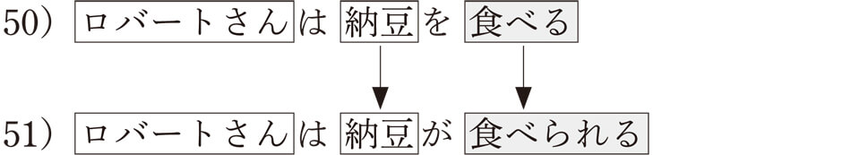例文50）では、ロバートさんが主題であり主語でもありますね。主語と主題については、すでにお話ししましたが、もう一度説明しますね。この文は「ロバートさんが納豆を食べる」というコト（事実の部分）から、「ロバートさんが」という主語が主題化されたものです。したがって、「ロバートさんは」は主語でもあり、主題でもあると言えるわけです。「ロバートさんについて言えば、納豆を食べる」という意味ですね。それに対し、例文51）では、「ロバートさんに納豆が食べられる」というコトから、「ロバートさんに」が主題化されていると考えることができます。ということは、主語は「納豆」ですね。つまり、可能形の主語は、実現が問われる事柄になっているんです。英語では一般的に“can”を使って日本語の可能構文を、“Mr. Robert can eat Natto”などと訳しますが、アルフォンソさんという有名な日本語研究家は、このような日本的な表現をそのまま、英語に翻訳し、そのニュアンスを学習者に伝えようとしました。
まさに、「ロバートさんについて言えば、納豆が食べられる」という意味ですね。文の形は完全な自動詞文になります。物事の実現の有無を問うような問題も、日本語では、人間の意志から離れた出来事の一つのように表されるんですね。たとえば、「英語が話せる」「バイオリンが弾ける」「ブラジル料理が作れる」なども、実現可能な一つの出来事としてとらえられ、その出来事に関係する人を主題で表すわけです。
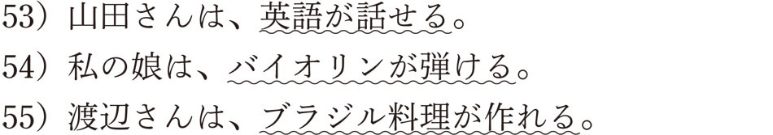これに対し、英語では必ず“I can do...”と人間の意志によって実現の有無を決定する表現が使われるわけです。ここに、欧米語などに代表される人間中心の発想とは明らかに異なる、日本人の発想を見ることができるわけです。なお、日本語の文法書の多くでは、前掲の例文に見るような「英語」「バイオリン」「ブラジル料理」を対象（目的語）とみなしますが、本書では日本語の特質という観点から主語として扱っています。
次に、自発形もまた、このような日本人の物事に対するとらえ方を表しています。自発形は出来事が自然に発生することを表す形式ですが、その数自体はそれほど多くはありませんが、日常的によく使われる自発動詞に、「見える」と「聞こえる」があります。
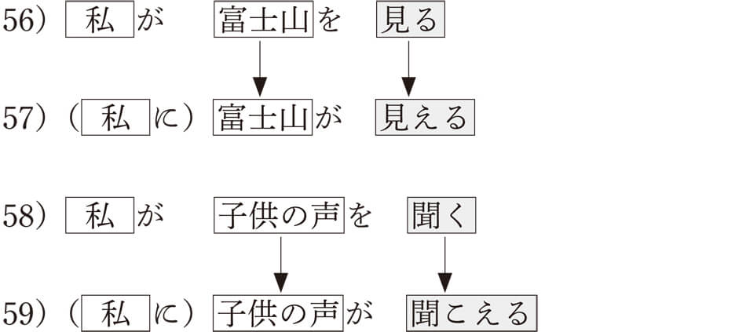自発形でも、身の周りにあるものが自然に目や耳に入ってくるのであり、自分から主体的に働きかけた結果ではないんですね。したがって、そのような情景や音が主語となって表されるわけです。人間が積極的に関わる英語とくらべてみてください。
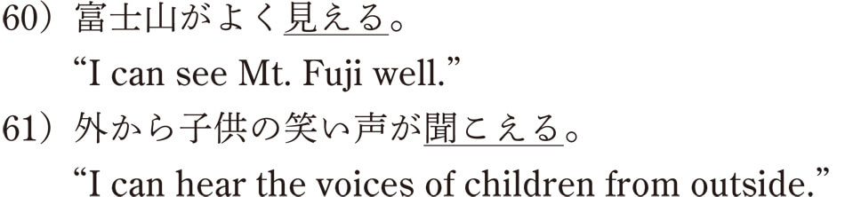このように、日本語では、外界から目に飛び込んでくる情景や音として、「見える」と「聞こえる」が使われます。そこには、人間の意志は存在していません。自然の流れのなかにいる私たちという感覚ですね。一方、人間が主体的に関わらなければ、外界の出来事を感じることができないのが英語です。日本語でも、意志的に物事を見たり聞いたりすることがあります。その場合は、自発動詞ではない、「見る」と「聞く」が使われます。
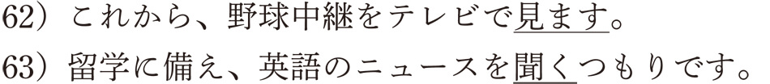いかがでしょうか。可能形も自発形も、受身形や使役形とともに、私たち日本人の認識のあり方、ひいては世界観を代弁していることがおわかりになったでしょうか。
マスコミでもよく話題になるので、聞いたことのある方も多いと思いますが、ボイスと関係のある現象ですので、ここで説明したいと思います。この「ら抜き言葉」は、先ほど見た可能形の表現「～られる」から「ら」が抜ける現象のことを言います。たとえば、
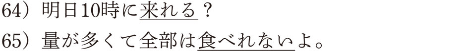のような表現が「ら抜き言葉」と呼ばれています。本来は、「来られる」と「食べられない」と言うべきところを、「ら」が抜けているというものですね。読者の皆さんはどちらを使っているでしょうか。
間違った使い方だと言われる一方で、言葉の自然な変化であると擁護する立場もあります。平成20年度に文化庁が調査した「国語に関する世論調査」の結果によると、「来ることができる」という意味で、本来の「来られる」ではなく「来れる」を使うことについて、「『言葉の乱れ』だと思う」と回答した人は23.7％にすぎず、「そういう言い方をしても構わないと思う」「乱れではなく『言葉の変化』だと思う」「正しい言い方だと思う」という肯定的な回答が合計で72.6％に達しています。平成13年度にも同様な調査をしており、そのときとくらべて全体の肯定的な回答は2.7％の微増ですが、「言葉の変化」と考える人が大きく増えているのが特徴です。この調査から、多くの人が「ら抜き言葉」を容認していることがうかがえます。「ら抜き言葉」として比較的よく使われるのが、「食べれる」「来れる」「見れる」「寝れる」「起きれる」「出れる」などで、一方、「考えれる」「覚えれる」「忘れれる」などの使用率は低いようです。
ただ、可能形のなかにはもともと「ら」が入らない形式もあるため、すべての可能形が「ら抜き言葉」になるわけではありません。じゃあ、「ら」が入っている動詞と入っていない動詞では、何が違うんだろうということになりますが、子音動詞の可能形には「ら」が入りませんが、母音動詞の可能形には「ら」が入るんです。
子音動詞と母音動詞というのは、はじめて聞く言葉ですね。日本語文法での呼び方なんですが、学校文法で言う五段活用動詞（五段動詞）を子音動詞、上一段活用動詞と下一段活用動詞を母音動詞と呼んでいます。言語学的には五段活用動詞の語幹は子音で終わり、上一段・下一段活用動詞（一段動詞）の語幹は母音で終わるため、そのような呼び方をしているんですね。詳しく説明すると長くなるので、簡単な区別の方法だけを教えますね。動詞を過去形にしたときに、促音便「～った」、イ音便「～いた／いだ」、撥音便「～んだ」という音便形と「～した」という形式になるのが子音動詞です。それ以外は母音動詞と思っていただければけっこうです。これに、「する」と「来る」という不規則動詞（学校文法では、カ行変格活用動詞とサ行変格活用動詞と呼んでいます）が加われば、すべての動詞になります。「ら抜き言葉」は母音動詞と不規則動詞「来る」だけに現れる現象と言えるんですね。これを以下の表で示しますね。
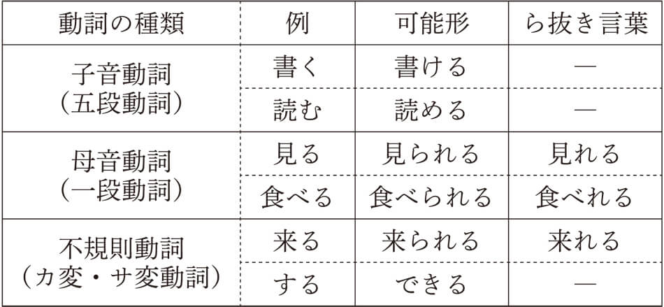この表を見て、あれっと思った人もいるかもしれません。そうです、母音動詞と不規則動詞「来る」の可能形は受身形と同じですね。じつは、歴史的には子音動詞の可能形も受身形と同じでしたが、先にら抜き現象が起こり、現在のような形式になったと言われています。上の表であれば、「書かれる（kakareru）→書ける（kakeru）」「読まれる（yomareru）→読める（yomeru）」という変化です。子音動詞の場合は、「ra」ではなく「ar」が抜けることになるのですが、原理的にはら抜き現象と同じです。もし「明日の会合は用事があって行かれない」なんて言えるとしたら、この変化のなごりです。正しくは、「行けない」となるべきですが、変化する前のかたちがまだ使われている珍しい例ですね。
これらの事実から、子音動詞に起きたら抜き現象が、母音動詞に移り、可能形全体が統一した形式に向かっていると考えることができます。言語学的にも、受身形などとの使用の混乱を避けるために、複雑な体系からより簡素化した体系に向かっているととらえることができるわけです。筆者もこの意見には賛成で、現在は公式な文書での使用は控えられていますが、将来的には認められる日も来るのではないかと見ています。
皆さん、「さ入れ言葉」を、聞いたことがありますか。「ら抜き言葉」ほどは有名ではありませんが、私たち、日本語教育関係者のなかではよく話題になる現象です。「ら抜き言葉」は「ら」を抜く表現でしたが、「さ入れ言葉」は反対に「さ」を入れて使うものですね。どの表現に「さ」を入れるかというと、使役形です。それも子音動詞の使役形だけにです。「ら抜き言葉」は母音動詞と「来る」の可能形から「ら」が抜けましたが、使役形では、子音動詞だけに「さ」が入ります。なぜ母音動詞に「さ」が入らないかというと、すでに「さ」が入っているからなんですね。次の表を見てください。
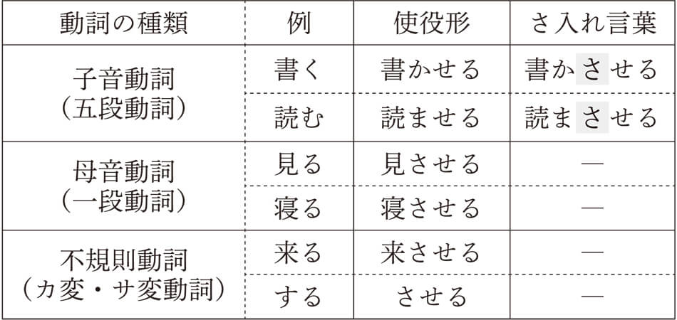「さ入れ言葉」は、「～ていただく」という謙譲表現や「～てください」という依頼表現に現れることが多いようです。平成22年度の文化庁「国語に関する世論調査」によると、「明日は休ませていただきます」と「明日は休まさせていただきます」のどちらを使うかという質問に対し、「さ」が入った表現を選んだ人が18％いました。数字的にはそれほど高くありませんが、約２割の人は「さ入れ言葉」を使っているということになります。
以前、大学の授業中に社会人学生から質問があり、テレビ番組で某タレントがよく使っているが、間違っていないのかと聞かれました。文法規則上は正しくないと答え、私自身も気をつけてテレビを見るようにしました。そうすると、芸能人だけでなく、政治家も使っているのに気がつきました。私が実際に耳にしたのは、選挙キャンペーン中の首相（当時）が「頑張らさせてください」と言っていたのや野党の党首（当時）が「政権を取らさせてください」などと訴えていたものなどです。いずれも、「頑張らせてください」「政権を取らせてください」が正しいかたちとなりますが、果たして「さ入れ言葉」は間違った表現なのでしょうか。どうやら、この「さ入れ言葉」の背景には、丁寧度を高めようとする気持ちが働いているようです。たしかに「ぜひやらせてください」というより、「ぜひやらさせてください」と言うほうが、丁寧度がより高まる感じがします。
このように一部のタレントだけでなく、一国を代表するような政治家をはじめ、一般でもかなり使っていることから、一概に間違いとは言い切れない現実があります。「さ入れ言葉」のこれからの使い方の推移を慎重に見極めていく必要があるでしょう。
▲